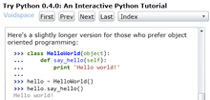

IronPython
the Python programming language for the .NET Framework
IronPython is an open-source implementation of the Python programming language which is tightly integrated with the .NET Framework. IronPython can use the .NET Framework and Python libraries, and other .NET languages can use Python code just as easily.
-
Download IronPython 2.6
-
Try Python in the browser
Quickly run Python code in your browser, without installing IronPython.
TODO: IronPython console -
# namespaces are modules from System.Collections.Generic import Dictionary # indexers constrains type d = Dictionary[str, int])() # Python idioms just work d['Hello'] = 1 d['Hi'] = 2 # this gives an error d[3] = 3Learn more with the online tutorial:

-
Why IronPython?
Python is an excellent addition to the .NET Framework, providing Python developers with the power of the .NET framework. Existing .NET developers can also use IronPython as a fast and expressive scripting language for embedding, testing, or writing a new application from scratch.
And why target .NET you ask? The CLR is a great platform for creating programming languages, and the DLR makes it all the more better for dynamic languages. Also, the .NET framework (base class library, presentation foundation, Silverlight, etc) give an amazing amount of functionality and power to developers.